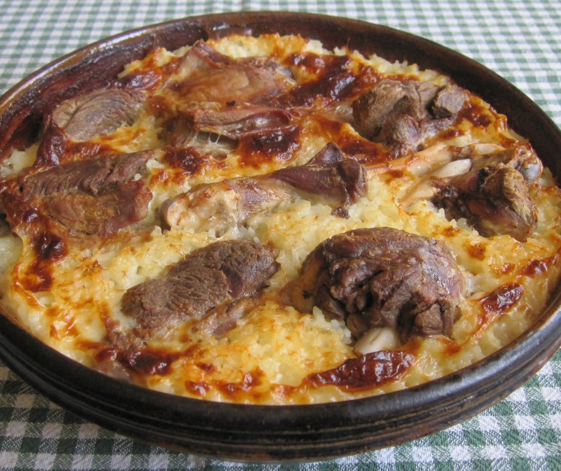

Tavë Kosi(Albanian baked lamb with rice)
Ingredients
70g/2½oz butter
tbsp olive oil
1.2kg/2lb 12oz boned lamb shoulder, cut into 5cm/2in cubes
4 garlic cloves, grated
1 tsp dried oregano
60g/2¼oz long-grain rice, rinsed
50g/1¾oz plain flour
600ml/20fl oz Greek-style yoghurt
4 free-range eggs, beaten
freshly grated nutmeg, to finish
salt and freshly ground black pepper
Method
Preheat the oven to 180C/160C Fan/Gas 4.
Heat 20g/¾oz of the butter and the olive oil in a large lidded pan over a high heat. Brown the lamb in batches
Return all the lamb to the pan. Add the garlic, oregano and 200ml/7fl oz water. Bring to a simmer and cook, covered with a lid, for about 45–60 minutes until the lamb is tender.
Stir in the rice, and season with salt and pepper. Transfer to a 3 litre/5¼ pint earthenware or other ovenproof dish.
Melt the remaining butter in a small saucepan, add the flour and make a roux, cook for 2 minutes, then take off the heat. Add the yoghurt and mix well, then return to the heat and cook gently for a couple of minutes. Take off the heat, add the beaten eggs and season with salt and pepper.
Pour the sauce over the lamb and rice mixture, grate fresh nutmeg on top and bake for 40–45 minutes until starting to turn golden-brown.
Remove from the oven and allow to sit for 5 minutes before serving. Serve with a simple lettuce salad.